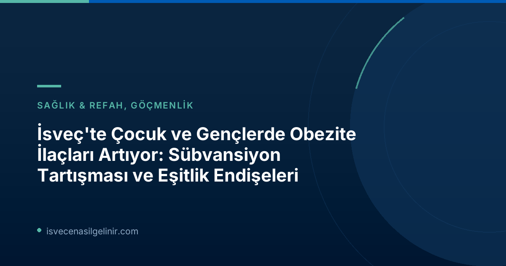

İsveç'te Çocuk ve Gençlerde Obezite İlacı Kullanımında Endişe Verici Artış
İsveç Sosyal Hizmetler Kurumu (Socialstyrelsen) tarafından sağlanan ve TT haber ajansı tarafından derlenen rakamlara göre, 0-19 yaş arası neredeyse 1.000'den fazla kişi bir önceki yılın aynı ayına kıyasla obezite ilaçları almaya başladı. Bu artış, hem sağlık yetkilileri hem de toplum tarafından dikkatle takip ediliyor.
Stockholm Rikscentrum Barnobesitas'ta görevli Başhekim Annika Janson, bu ilaçların çocuk ve gençlerin sağlığı için büyük önem taşıdığını belirtiyor. Ancak, bu ilaçların sübvanse edilmemesi nedeniyle ailelerin ciddi finansal yüklerle karşı karşıya kaldığını vurguluyor. Janson'a göre, ilaçların aylık maliyeti 3.000 İsveç Kronu'na (SEK) kadar çıkabiliyor.
| Konu | Detay |
|---|---|
| Etkilenen Yaş Grubu | 0-19 yaş arası çocuklar ve gençler |
| İlaç Kullanımında Artış | Bir önceki yıla göre yaklaşık 1.000 kişi daha fazla |
| Aylık Maliyet (Sübvansiyonsuz) | 3.000 SEK'ye kadar |
| Sorumlu Kurum | Sosyal Hizmetler Kurumu (Socialstyrelsen) |
Obezite Tedavisinde İlaçların Rolü ve Bilimsel Destek
Son dönemde yapılan bilimsel araştırmalar, çocukluk çağı obezitesinin tedavisinde yaşam tarzı değişiklikleri ile ilaç tedavisinin kombine edilmesinin en etkili yöntem olduğunu ortaya koyuyor. Jama Pediatrics'te yayımlanan ve 3.000'den fazla çocuğu kapsayan yeni bir çalışma, bu yaklaşımın başarısını kanıtlar nitelikte.
Mart ayında yayımlanan Karolinska Üniversitesi Hastanesi kaynaklı başka bir çalışma da, obeziteli çocuk ve gençlerin bu ilaçlardan önemli ölçüde fayda gördüğünü gösteriyor. Annika Janson, "Bu ilaçlar, yüksek derecede fazla kilolu veya obezite ile yaşayan birçok çocuk için büyük önem taşıyor," diyerek bilimsel bulguları destekliyor ve klinik deneyimlerini aktarıyor.
Sosyoekonomik Eşitsizlik ve Obezite Arasındaki Bağlantı
UNICEF ve Uppsala Üniversitesi'nin ortaklaşa yürüttüğü araştırmalar, İsveç'te obezite oranlarının sosyoekonomik açıdan dezavantajlı çocuk ve gençlerde daha yüksek olduğunu gözler önüne seriyor. Bu durum, obezite tedavisinde ilaçlara erişim maliyetinin, zaten zor durumda olan aileler için sürdürülemez bir yüke dönüşmesi riskini beraberinde getiriyor.
Annika Janson, bu durumu "çok önemli bir eşitlik meselesi" olarak nitelendiriyor. Janson, diyabet tip 2, yüksek kan yağları ve yüksek tansiyon gibi diğer yaşam tarzı ilişkili hastalıkların ilaçlarının sübvanse edildiğini, ancak obezite ilaçlarının sübvanse edilmemesini sorguluyor. Ona göre, bu durum çocuk ve gençlerin sağlık hizmetlerine eşit erişim hakkını ihlal ediyor.
Eşitlik Meselesi: Neden Obezite İlaçları Sübvanse Edilmiyor?
Başhekim Annika Janson, obezite ilaçlarının sübvansiyon eksikliğinin, hastalığın sosyoekonomik statüyle güçlü bir ilişkisi olması nedeniyle özellikle adaletsiz olduğunu savunuyor. Zaten ekonomik zorluklarla boğuşan aileler, çocuklarının sağlığı için gerekli olan ayda 3.000 kronuya varan ilaç masrafını karşılamakta güçlük çekiyorlar. Bu durum, İsveç sağlık sisteminin eşitlik ilkesiyle çelişiyor. Özellikle İsveç Vatandaşlık Testi'ne hazırlanan göçmenler ve İsveç'te yeni bir hayat kuranlar için sağlık hizmetleri erişiminin önemi daha da artmaktadır.
İsveç Hükümetinden Yanıt: Subvansiyon ve "Sübvansiyon Kayması" Endişesi
Sosyal Bakan Jakob Forssmed (KD), SVT'ye yaptığı açıklamada, obeziteden etkilenen kişilerin "iyi ve eşit bir bakıma" sahip olması gerektiğini belirtiyor. Ancak, ilaçların sübvanse edilmesi durumunda, bunların doğru ellere ulaşmasının kritik olduğunu vurguluyor. Bakan Forssmed, aksi takdirde "sübvansiyon kayması" riski oluşabileceğinden endişe duyuyor. Sübvansiyon kayması, ilaçların hedef kitlesi dışındaki kişiler (örneğin, genel kilo verme amacıyla) tarafından tüketilme riskini ifade ediyor. Ozempic gibi benzer ilaçların toplumda genel kilo verme amacıyla popülerleşmesi, bu endişeyi pekiştiriyor.
Sosyal Bakan, hükümet kanadında, belirli bir gruba yönelik ilaç sübvansiyonlarının nasıl izleneceği ve kötüye kullanımın nasıl engelleneceği konusunda çalışmaların devam ettiğini belirtiyor. Bu, karmaşık bir sağlık politikası meselesi olup, hem bireylerin sağlık ihtiyaçlarını karşılama hem de kamu kaynaklarını etkili kullanma arasında bir denge bulmayı gerektiriyor.
Sonuç ve Geleceğe Yönelik Beklentiler
İsveç'te çocuk ve gençlerde obezite ilacı kullanımındaki artış ve sübvansiyon eksikliği, kritik bir sağlık ve eşitlik tartışmasını tetiklemiştir. Bilimsel kanıtlar, tedavi edici ilaçların önemini güçlü bir şekilde desteklerken, yüksek maliyetler ve sosyoekonomik eşitsizlikler, bu ilaçlara erişimi zorlaştırmaktadır. Hükümetin "sübvansiyon kayması" endişeleri anlaşılır olsa da, çocuk ve gençlerin sağlığı için adil ve erişilebilir tedavi seçeneklerinin sunulması büyük önem taşımaktadır. İsveç'in bu konuda nasıl bir çözüm Pathways geliştireceği, hem sağlık politikaları hem de sosyal adalet açısından yakından takip edilecektir.
Referanslar:
- SVT Nyheter Inrikes - Fetmaläkemedel ökar bland barn och unga – subventioneras inte
- sverigemedborgarskapsprov.com
İsveç'te Sağlık Sistemi ve Yaşam Hakkında Daha Fazla Bilgi Edinin
İsveç'teki yaşam koşulları, sağlık hizmetleri ve yasal süreçler hakkında merak ettikleriniz mi var? Uzmanlarımız size rehberlik etmek için hazır.